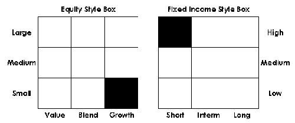

Created by Morningstar, a style box is designed to visually represent the investment characteristics of fixed-income (bond), domestic equity (stock) and international equity (stock) securities and their respective mutual funds. A style box is a valuable tool for investors to use to determine the asset allocation and risk-return structures of their portfolios and/or how a security fits into their investing criteria. There are slightly different style boxes used for equity and fixed-income funds.
For stock funds (domestic and international), the horizontal axis of the style box is divided into three investment style categories: value, blend (a value/growth mix) and growth. The vertical axis is divided into three company-size (based on market-capitalization) indicators: large, medium and small.
For bonds and bond funds, the horizontal axis is divided into three maturity categories: short-term, intermediate-term, and long-term. The vertical axis is divided into three credit-quality categories: high, medium and low (BB-C).
Investors can use a style box to put together mutual fund portfolio and visually see the results as a total picture. For example, an investor looking for a relatively safe stock fund would seek out one categorized as a large-cap value fund. If that same investor is willing to accept more risk for the opportunity of a greater return, he/she might select a fund in the small-cap growth category. Putting dollar values on the fund selections in the same and/or differing category squares will readily reflect the risk-return parameters of the whole portfolio.
{kind=link}